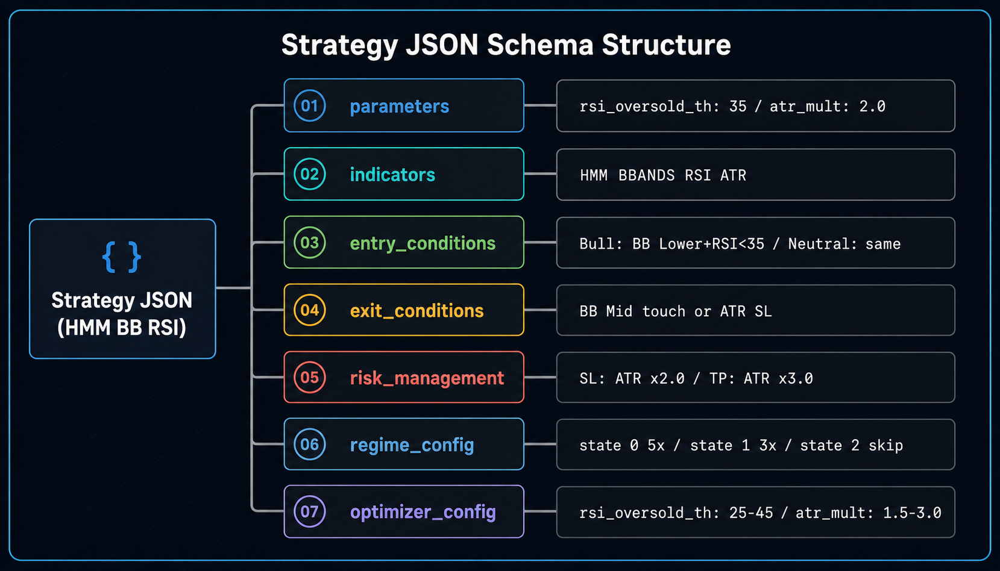
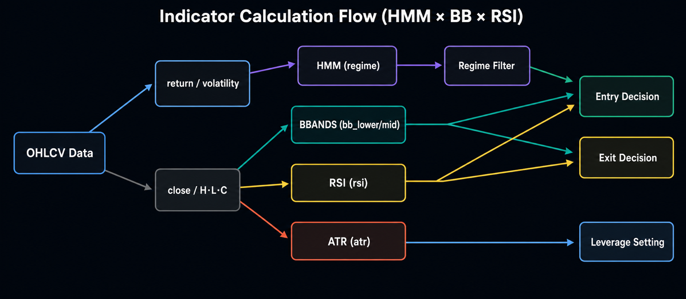
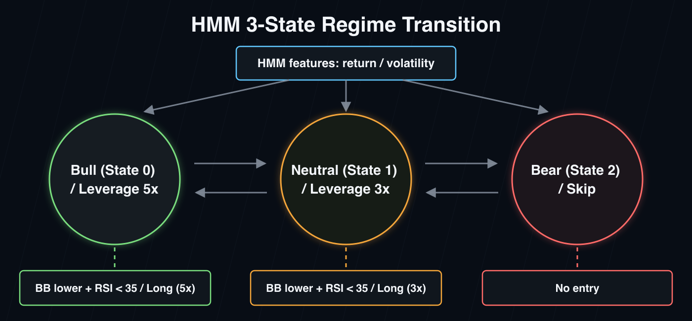

Strategy Templates¶
Three representative strategy patterns used with AlphaForge. The strategy JSON is fully copy-pasteable and can be registered as-is via forge strategy save.
About sample output
Backtest result numbers are illustrative. Actual values depend on data and environment (fetch period, provider, settings).
Templates covered¶
| Template | Strategy type | Key indicators |
|---|---|---|
| HMM × BB × RSI | Regime-adaptive mean reversion | HMM / BBANDS / RSI |
| Regime switching | Per-regime strategy switching | HMM / SUPERTREND / BBANDS / RSI |
| Multi-timeframe | Higher-TF trend × daily entry | Weekly SMA / RSI / ATR |
Strategy JSON basics¶
Every strategy follows the same Pydantic schema. Indicator details are available via forge indicator list.
{
"strategy_id": "...",
"name": "...",
"target_symbols": [...],
"asset_type": "stock",
"timeframe": "1d",
"parameters": {...}, // Top-level parameters subject to optimization
"indicators": [...], // Computed indicators (30+ types)
"variables": [...], // Intermediate boolean variables (optional)
"entry_conditions": {...}, // Entry conditions
"exit_conditions": {...}, // Exit conditions
"risk_management": {...}, // Position size, SL/TP
"regime_config": {...}, // Regime adaptation (optional)
"optimizer_config": {...} // Optimization parameter ranges
}

Key concepts:
indicators[].lock_on_entry: true— Freeze the value at the entry bar (used for SL/TP prices)indicators[].timeframe: "1w"— Pull values from a higher timeframe (multi-timeframe)EXPRindicator — Arbitrary pandas expression (e.g.,"close * 0.98")HMMindicator — Hidden Markov Model regime detectionregime_config— Switchentry/exit/risk_overrideper regime, keyed on the HMM output

HMM × BB × RSI¶
Overview¶
Mean-reversion entries triggered by Bollinger Band lower break + RSI oversold, filtered through a 3-state HMM regime detector. Bull/Neutral/Bear regimes are distinguished, with aggressive leverage in Bull (5x), conservative in Neutral (3x), and skip in Bear.
The strength of this template is managing three regimes within a single strategy JSON. A mean-reversion strategy that works in range markets is automatically muted (or fully paused) when trends are too strong or too weak — keeping drawdowns under control.

Suitable scenarios¶
- Symbols: US large-cap ETFs (QQQ, SPY), growth stocks (NVDA), instruments with low long-horizon transaction costs
- Market environment: Mid-to-long-term regimes alternating between trend and range (like 2018-2025)
- Holding period: Days to ~2 weeks
- Risk profile: Leverage-friendly (up to 5x); HMM mis-detection can amplify drawdowns
Strategy JSON (full)¶
{
"strategy_id": "multi_asset_hmm_bb_rsi_v1_qqq",
"name": "Multi-Asset HMM×BB+RSI v1 (QQQ)",
"version": "1.0.0",
"description": "HMM 3-state regime filter × BB+RSI mean reversion. Bull(state=0): long on BB-lower + RSI oversold (leverage=3). Neutral(state=1): same condition (leverage=1.5). Bear(state=2): skip. Daily.",
"target_symbols": ["QQQ"],
"asset_type": "stock",
"timeframe": "1d",
"parameters": {
"rsi_oversold_th": 35,
"atr_mult": 2.0
},
"indicators": [
{ "id": "regime", "type": "HMM", "params": { "n_components": 3, "features": ["return", "volatility"] } },
{ "id": "bb_lower", "type": "BBANDS", "params": { "length": 20, "std": 2.0, "line": "lower" } },
{ "id": "bb_mid", "type": "BBANDS", "params": { "length": 20, "std": 2.0, "line": "mid" } },
{ "id": "rsi", "type": "RSI", "params": { "length": 7 } },
{ "id": "atr", "type": "ATR", "params": { "length": 14 } },
{ "id": "sl_dist", "type": "EXPR", "params": { "expr": "atr * atr_mult" }, "lock_on_entry": true }
],
"variables": [],
"entry_conditions": { "long": { "logic": "AND", "conditions": [] } },
"exit_conditions": { "long": { "logic": "OR", "conditions": [] } },
"risk_management": {
"leverage": 5.0,
"position_sizing_method": "fixed",
"position_size_pct": 100.0,
"stop_loss_indicator": "sl_dist",
"max_positions": 1
},
"regime_config": {
"indicator_id": "regime",
"default_action": "skip",
"states": {
"0": {
"entry_conditions": { "long": { "logic": "AND", "conditions": [
{ "left": "close", "op": "<", "right": "bb_lower" },
{ "left": "rsi", "op": "<", "right": "rsi_oversold_th" }
]}},
"exit_conditions": { "long": { "logic": "OR", "conditions": [
{ "left": "close", "op": ">", "right": "bb_mid" }
]}},
"risk_override": { "leverage": 5.0, "position_sizing_method": "fixed", "position_size_pct": 100.0 }
},
"1": {
"entry_conditions": { "long": { "logic": "AND", "conditions": [
{ "left": "close", "op": "<", "right": "bb_lower" },
{ "left": "rsi", "op": "<", "right": "rsi_oversold_th" }
]}},
"exit_conditions": { "long": { "logic": "OR", "conditions": [
{ "left": "close", "op": ">", "right": "bb_mid" }
]}},
"risk_override": { "leverage": 3.0, "position_sizing_method": "fixed", "position_size_pct": 100.0 }
},
"2": {}
}
},
"backtest_config": {
"regime_analysis": {
"method": "hmm",
"hmm_indicator_id": "regime",
"label_names": { "0": "Bull", "1": "Neutral", "2": "Bear" }
}
},
"optimizer_config": {
"param_ranges": {
"bb_lower.length": { "min": 15, "max": 25, "step": 1 },
"bb_lower.std": { "min": 1.8, "max": 2.5, "step": 0.1 },
"rsi.length": { "min": 5, "max": 14, "step": 1 },
"rsi_oversold_th": { "min": 25, "max": 45, "step": 5 },
"atr_mult": { "min": 1.5, "max": 3.0, "step": 0.5 }
},
"constraints": { "min_trades": 20 },
"metric": "sharpe_ratio"
},
"tags": ["hmm", "bb", "rsi", "mean-reversion", "leverage", "nas100"]
}
Key parameters¶
| Parameter | Role | Recommended range |
|---|---|---|
regime.n_components |
HMM state count | 3 (Bull/Neutral/Bear) |
regime.features |
HMM input features | ["return", "volatility"] |
bb_lower.length / std |
BB period and std multiplier | period 15-25, std 1.8-2.5 |
rsi.length |
RSI period | 5-14 (shorter = more responsive) |
rsi_oversold_th |
Entry threshold | 25-45 (lower = stricter) |
atr_mult |
ATR-based SL multiplier | 1.5-3.0 |
risk_override.leverage |
Per-regime leverage | Bull 5.0 / Neutral 3.0 / Bear 0 (skip) |
Sample backtest output¶
Sample output
Numbers depend on data and environment.
==> QQQ 2018-01-01 → 2025-12-31 (1d)
trades: 38 win_rate: 65.8% profit_factor: 2.15
total_return: +124.5% cagr: +10.7% sharpe: 1.42
max_drawdown: -18.4% exposure: 24.3%
final_equity: $22,450 (initial: $10,000)
Customization tips¶
- Change the symbol: Replace
target_symbolswith["SPY"],["NVDA"],["GC=F"], etc. - Change state count:
regime.n_components: 2(Bull/Bear) simplifies the decision;4adds nuance (requires more data) - Strengthen entry: Add
volume > sma_volume_20or similar conditions inregime_config.states["0"].entry_conditions - Optimize:
forge optimize run QQQ --strategy multi_asset_hmm_bb_rsi_v1_qqq --metric sharpe_ratio --save
Regime switching¶
Overview¶
A pattern that applies different strategies per regime, keyed on HMM output. Within a single strategy JSON, the Bull regime runs trend-following and the Bear/Range regime runs mean reversion — swapping the strategy itself rather than just parameters.
The defining feature versus HMM × BB × RSI: regime_config.states lets you define entry_conditions and exit_conditions completely independently per regime.
Suitable scenarios¶
- Symbols: Commodity futures (CL=F, GC=F, NG=F) — high-volatility instruments with clear trend/range alternation
- Market environment: Capture both trend and counter-trend behavior typical of commodity markets
- Holding period: Days to a month
- Risk profile: High leverage (10x) + ATR-based SL; assumes margin-based commodity trading
Strategy JSON (full)¶
{
"strategy_id": "commodity_hmm_regime_v1",
"name": "Commodity HMM Regime v1",
"version": "1.0.0",
"description": "Regime-adaptive for commodity CFDs: HMM 2-state Bull/Bear. Bull = SuperTrend long, Bear = BB+RSI mean reversion. leverage=10.",
"target_symbols": ["GC=F", "SI=F", "CL=F", "BZ=F", "NG=F", "ZC=F", "ZS=F", "ZW=F", "HG=F"],
"asset_type": "stock",
"timeframe": "1d",
"parameters": {
"adx_threshold": 20,
"rsi_threshold": 35,
"atr_mult": 2.0
},
"indicators": [
{ "id": "regime", "type": "HMM", "params": { "n_components": 2, "features": ["return", "volatility"], "volatility_window": 10 } },
{ "id": "supertrend_val", "type": "SUPERTREND", "params": { "length": 9, "multiplier": 3.0 } },
{ "id": "adx_val", "type": "ADX", "params": { "length": 14 } },
{ "id": "bb_lower", "type": "BBANDS", "params": { "length": 20, "std": 2.0, "line": "lower" } },
{ "id": "bb_mid", "type": "BBANDS", "params": { "length": 20, "std": 2.0, "line": "mid" } },
{ "id": "rsi", "type": "RSI", "params": { "length": 14 } },
{ "id": "atr", "type": "ATR", "params": { "length": 14 } },
{ "id": "sl_dist", "type": "EXPR", "params": { "expr": "atr * atr_mult" }, "lock_on_entry": true }
],
"variables": [],
"entry_conditions": { "long": { "logic": "AND", "conditions": [] } },
"exit_conditions": { "long": { "logic": "OR", "conditions": [] } },
"risk_management": {
"leverage": 10.0,
"position_sizing_method": "risk_based",
"risk_per_trade_pct": 1.5,
"stop_loss_indicator": "sl_dist",
"max_positions": 1
},
"regime_config": {
"indicator_id": "regime",
"states": {
"0": {
"entry_conditions": { "long": { "logic": "AND", "conditions": [
{ "left": "close", "op": "crosses_above", "right": "supertrend_val" },
{ "left": "adx_val", "op": ">", "right": "adx_threshold" }
]}},
"exit_conditions": { "long": { "logic": "OR", "conditions": [
{ "left": "close", "op": "crosses_below", "right": "supertrend_val" }
]}}
},
"1": {
"entry_conditions": { "long": { "logic": "AND", "conditions": [
{ "left": "close", "op": "<", "right": "bb_lower" },
{ "left": "rsi", "op": "<", "right": "rsi_threshold" }
]}},
"exit_conditions": { "long": { "logic": "OR", "conditions": [
{ "left": "close", "op": ">", "right": "bb_mid" }
]}}
}
}
},
"optimizer_config": {
"param_ranges": {
"supertrend_val.multiplier": { "min": 2.0, "max": 4.0, "step": 0.5 },
"adx_threshold": { "min": 15, "max": 30, "step": 5 },
"rsi_threshold": { "min": 25, "max": 45, "step": 5 },
"atr_mult": { "min": 1.5, "max": 3.0, "step": 0.5 }
},
"constraints": { "min_trades": 15 },
"metric": "sharpe_ratio"
},
"tags": ["hmm", "regime", "adaptive", "commodity", "leverage-10"]
}
Key parameters¶
| Parameter | Role | Recommended range |
|---|---|---|
regime.n_components |
HMM state count | 2 (simple Bull/Bear switch) |
regime.volatility_window |
Volatility computation window | 10 (short) to 30 (mid) |
supertrend_val.multiplier |
SuperTrend channel width | 2.0-4.0 (smaller = more responsive) |
adx_threshold |
Trend strength threshold | 15-30 (≥25 = strong trend) |
rsi_threshold |
Mean-reversion oversold threshold | 25-45 |
risk_per_trade_pct |
% risk per trade | 1.5 (conservative) |
leverage |
Commodity futures leverage | 10 (margin trading assumed) |
Sample backtest output¶
Sample output
==> CL=F 2018-01-01 → 2025-12-31 (1d)
trades: 27 win_rate: 51.9% profit_factor: 1.82
total_return: +88.3% cagr: +8.4% sharpe: 1.21
max_drawdown: -22.1% exposure: 31.5%
regime_breakdown: state=0 (Bull): 14 trades, sharpe 1.45 / state=1 (Bear): 13 trades, sharpe 0.92
Customization tips¶
- Add more states:
n_components: 3for Bull/Range/Bear; addstates["2"] - Switch to equities: Replace
target_symbolswith stocks and lowerrisk_management.leverageto1.0-2.0 - More entries: Loosen each regime's
entry_conditions(e.g.,adx_threshold: 15,rsi_threshold: 45) - Cross-symbol optimize:
forge optimize cross-symbol GC=F SI=F CL=F --strategy commodity_hmm_regime_v1 --aggregation min --save
Multi-timeframe¶
Overview¶
Use the indicators[].timeframe field to pull higher-timeframe values while entering on the lower timeframe. Judge a long-term trend on the weekly SMA and time pullback entries on the daily RSI.
Educational example
The strategy JSON in this section is written as an example of the indicators[].timeframe feature. Validate behavior with forge strategy validate and forge backtest run before live use.
Suitable scenarios¶
- Symbols: US large-cap stocks / ETFs (SPY, QQQ, AAPL)
- Market environment: Long-term uptrend with short-term pullbacks
- Holding period: 1 day to 2 weeks
- Risk profile: Trend-following design — watch for drawdowns at trend reversals. Skips entries entirely when the weekly trend turns down.
Strategy JSON (full)¶
{
"strategy_id": "spy_mtf_trend_pullback_v1",
"name": "SPY Multi-Timeframe Trend Pullback v1",
"version": "1.0.0",
"description": "Multi-timeframe strategy: judge trend with weekly SMA, time pullback entries on daily RSI oversold.",
"target_symbols": ["SPY"],
"asset_type": "stock",
"timeframe": "1d",
"parameters": {
"rsi_oversold_th": 35,
"atr_mult": 2.0
},
"indicators": [
{
"id": "weekly_sma",
"type": "SMA",
"params": { "length": 20 },
"source": "close",
"timeframe": "1w"
},
{
"id": "weekly_close",
"type": "EXPR",
"params": { "expr": "close" },
"timeframe": "1w"
},
{ "id": "rsi", "type": "RSI", "params": { "length": 7 } },
{ "id": "sma_50", "type": "SMA", "params": { "length": 50 } },
{ "id": "atr", "type": "ATR", "params": { "length": 14 } },
{ "id": "sl_dist", "type": "EXPR", "params": { "expr": "atr * atr_mult" }, "lock_on_entry": true }
],
"variables": [
{
"id": "weekly_uptrend",
"logic": "AND",
"conditions": [
{ "left": "weekly_close", "op": ">", "right": "weekly_sma" }
]
}
],
"entry_conditions": {
"long": {
"logic": "AND",
"conditions": [
{ "left": "weekly_uptrend", "op": "==", "right": true },
{ "left": "close", "op": ">", "right": "sma_50" },
{ "left": "rsi", "op": "<", "right": "rsi_oversold_th" }
]
}
},
"exit_conditions": {
"long": {
"logic": "OR",
"conditions": [
{ "left": "rsi", "op": ">", "right": 60 },
{ "left": "close", "op": "<", "right": "sma_50" }
]
}
},
"risk_management": {
"leverage": 1.0,
"position_sizing_method": "fixed",
"position_size_pct": 25.0,
"stop_loss_indicator": "sl_dist",
"max_positions": 1
},
"regime_config": null,
"optimizer_config": {
"param_ranges": {
"weekly_sma.length": { "min": 10, "max": 30, "step": 5 },
"rsi.length": { "min": 5, "max": 14, "step": 1 },
"rsi_oversold_th": { "min": 25, "max": 45, "step": 5 },
"atr_mult": { "min": 1.5, "max": 3.0, "step": 0.5 }
},
"constraints": { "min_trades": 20 },
"metric": "sharpe_ratio"
},
"tags": ["multi-timeframe", "trend-following", "pullback", "weekly", "spy"]
}
Key parameters¶
| Parameter | Role | Recommended range |
|---|---|---|
weekly_sma.timeframe: "1w" |
Higher timeframe for the SMA | "1w" (also "4h", "1mo") |
weekly_sma.length |
Weekly SMA period | 10-30 (mid-to-long trend) |
rsi.length |
Daily RSI period | 5-14 |
rsi_oversold_th |
Pullback threshold | 25-45 |
sma_50 |
Daily mid-trend filter | fixed 50 |
position_size_pct |
Per-position size | 25% (conservative) |
The indicators[].timeframe field computes only that indicator on a different timeframe. When a daily-base strategy (timeframe: "1d") references a weekly indicator, the matching weekly value is automatically forward-filled (ffill) to align with each daily row.
Sample backtest output¶
Sample output
==> SPY 2018-01-01 → 2025-12-31 (1d)
trades: 32 win_rate: 62.5% profit_factor: 1.95
total_return: +68.2% cagr: +6.7% sharpe: 1.18
max_drawdown: -14.3% exposure: 28.7%
Customization tips¶
- Change the higher timeframe:
weekly_sma.timeframe: "4h"for intraday MTF;"1mo"for monthly-led strategies - Combine multiple higher timeframes: Require both weekly and monthly SMAs to be cleared before entering
- Expand symbols:
target_symbols: ["SPY", "QQQ", "DIA"]and useforge optimize cross-symbolfor robust parameters - Add shorts: Define
entry_conditions.shortfor "weekly downtrend + daily RSI overbought"
Customization and derivations¶
Parameter optimization¶
Each template includes optimizer_config.param_ranges, so Optuna Bayesian optimization runs with:
See forge optimize run for details.
Walk-forward to guard against overfitting¶
Each window runs IS optimization → OOS evaluation; check overfitting_score afterwards.
Sensitivity analysis to measure robustness¶
Sweep around optimized parameters and measure how much the metric moves. If overall_robustness_score ≤ 0.7, suspect overfitting.
Compare with live results¶
Once trade records accumulate, compare against backtest:
See forge live compare.
Related documentation¶
- Getting Started — Start with a simple SMA crossover
- CLI Reference — All
forgecommand parameters - AI-Driven Strategy Exploration Workflow — Generate strategies with Claude Code / Codex